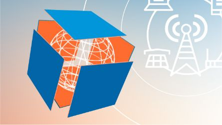

a
a
a
Цифровая кафедра ОмГТУ
Что такое «Цифровая кафедра»?
«Цифровая кафедра» – проект, реализуемый в Омском государственном техническом университете – участнике программы стратегического академического лидерства «Приоритет-2030». Этот проект осуществляется в рамках федерального проекта «Развитие кадрового потенциала ИТ-отрасли» Национальной программы «Цифровая экономика Российской Федерации».
Студенты ОмГТУ любых направлений могут параллельно с освоением основной профессии пройти бесплатную подготовку по курсу Дополнительного профессионального образования с целью получения квалификации по ИТ-профилю.
Программы разделены на две категории: для обучающихся по профильным ИТ-направлениям и для тех, чья будущая специальность не относится к этой сфере. Студент выбирает одну программу по своим интересам из предложенных категорий.
После успешного прохождения курса и сдачи экзамена в форме публичной защиты проекта выдается Диплом государственного образца о профессиональной переподготовке.
Программы подготовки
Программы для студентов, обучающихся на направлениях, не связанных с ИТ:
- Цифровое государство: Информационные технологии в системе государственного и муниципального управления
- Цифровые технологии в индустрии моды
- Python и анализ данных
- Когнитивное моделирование психологических процессов
- Цифровая трансформация компаний на основе решений "1С"
- Применение информационных технологий в теплоэнергетике
- Разработка приложений виртуальной реальности
- Web-разработка цифровых продуктов в сфере профессиональной деятельности
- Технологии программирования
Программы для студентов, обучающихся на профильных ИТ-направлениях:
- Инженерный дизайн и программирование в САПР
- Управление цифровой трансформации промышленных предприятий
- Медиатехнологии в профессиональной деятельности
- Цифровой маркетинг
- ОС Linux для пользователя и системного инженера
- Профессиональная разработка мобильных приложений
- Цифровое управление техническим обслуживанием и ремонтом оборудования
- Цифровые технологии и 3D-моделирование в машиностроении
- Кибербезопасность и защита информации
- Создание бизнес-приложений на платформе 1С Предприятие 8
- Применение технологий искусственного интеллекта и обработки больших данных в энергетике
- Тестирование программного обеспечения
- Технологии анализа данных
Бонусы обучения

- Возможность реализации способностей через освоение востребованных цифровых навыков без отрыва от основной учебы
- Перспектива пройти практику в компании, которая реализует ИТ-направление по выбранному курсу
- Возможность успешного трудоустройства и карьерного роста благодаря цифровым компетенциям